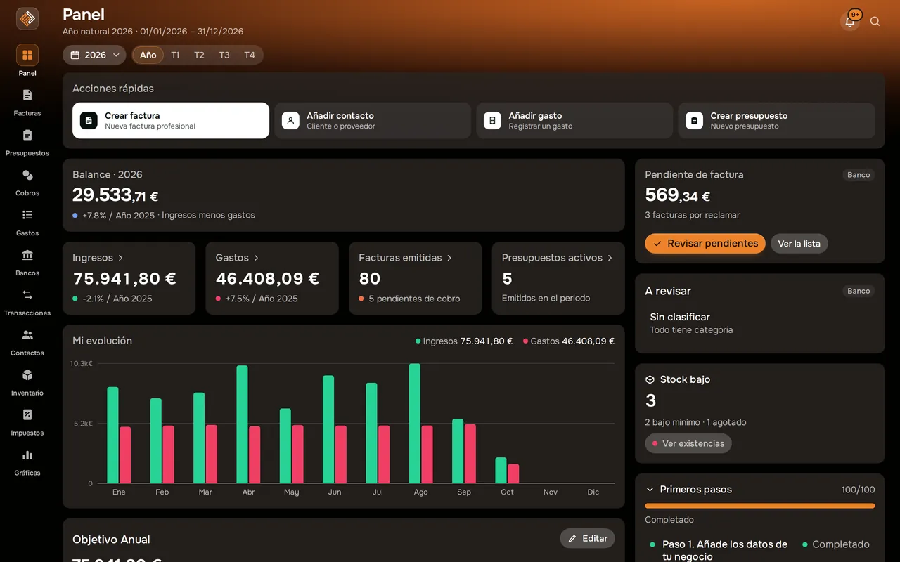
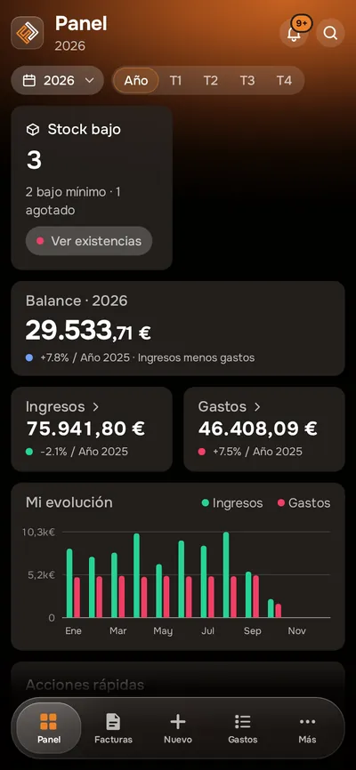
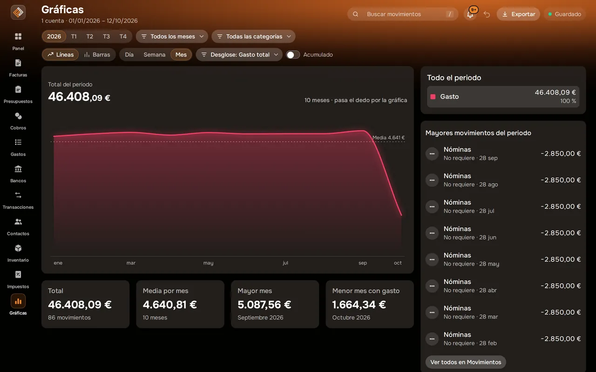

Panel y gráficas
Cómo va tu negocio, sin abrir una hoja de cálculo.
El panel reúne ingresos, gastos, pendiente de cobro y resultado. Cada cifra indica de dónde sale, y las gráficas te enseñan la evolución mes a mes.


Captura real de Facturales con datos de ejemplo.
Así se ve en la app
GráficasIngresos, gastos y beneficio a lo largo del año.

Qué puedes hacer
Panel
Las cifras clave de tu negocio nada más entrar, con su fuente.
Gráficas
Ingresos y gastos por mes, con los mismos filtros que Gastos.
Acciones rápidas
Emitir factura, crear presupuesto, escanear un gasto o importar un extracto, a un clic.
Búsqueda global
Encuentra cualquier factura, cliente o gasto con Ctrl/⌘ + K.
Qué revisar
Tarjetas con lo pendiente de factura, el cierre del trimestre y lo que está por revisar.
También en el móvil
El mismo panel en las apps para iOS y Android.
Cómo funciona
Registra
Factura, escanea gastos e importa tus extractos.
Consulta
El panel se actualiza con cada documento.
Decide
Con las cifras reales, no con estimaciones de memoria.
Preguntas frecuentes
¿De dónde salen las cifras?
De tus facturas emitidas, tus gastos y, si usas Bancos, de tus movimientos conciliados. Cada tarjeta indica su fuente.
¿Necesito saber contabilidad?
No. El panel está pensado para leerlo de un vistazo.
¿Están disponibles las gráficas?
Gráficas es una función nueva que estamos activando de forma gradual.
Pon orden en tus finanzas esta semana
Crea tu cuenta, emite tu primera factura e importa tu primer extracto. Tienes 14 días de prueba en cualquier plan y puedes cancelar cuando quieras.